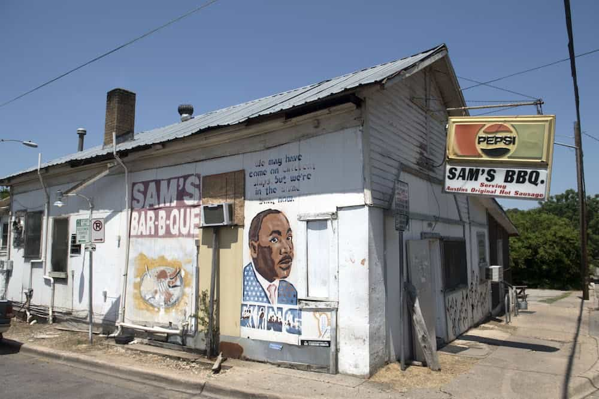

This month we’re highlighting Sam’s Bar-B-Que which has been an East Austin staple for locals. The place is known for its ridiculously tender meat. It’s an important community space for black Austinites who’ve been pushed out of the Austin area due to gentrification.
The owner of the place was offered millions of dollars to sell out, but ultimately refused. Many people who grew up in the once segregated East Austin are pushing back against attempts to buy them out of the city.

“You don’t need no teeth to eat my beef”
Sign up for our weekly news letter here